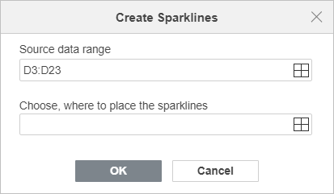
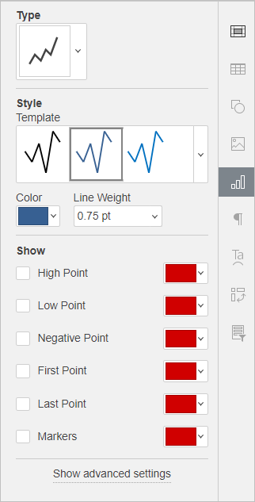
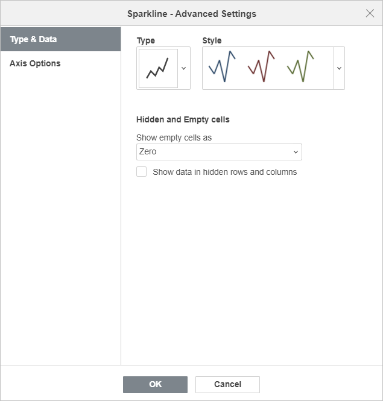
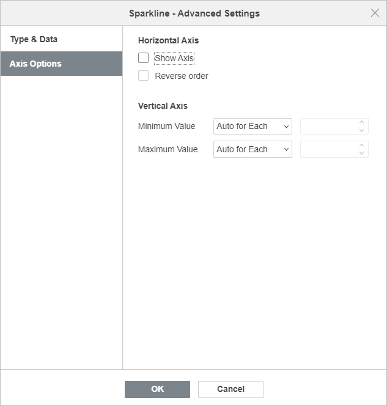

Umetanje sparkline grafikona
Korišćenje sparkline grafikona
Sparkline je mali grafikon koji staje u jednu ćeliju i služi za prikaz trendova ili varijacija podataka. Sparklines imaju ograničenu funkcionalnost u poređenju sa klasičnim grafikonima, ali su odličan alat za brzu analizu podataka i kreiranje sažetog vizuelnog prikaza. Veličina sparkline grafikona zavisi od veličine ćelije – promenite širinu i visinu ćelije da biste prilagodili veličinu. Nakon dodavanja sparkline grafikona, i dalje možete unositi tekst ili dodavati uslovno formatiranje u ćeliju. ONLYOFFICE Spreadsheet Editor nudi tri tipa sparkline grafikona:
- Column je sličan standardnom Column Chart grafikonu.
- Line je sličan standardnom Line Chart grafikonu.
- Win/Loss je pogodan za prikaz podataka koji uključuju i pozitivne i negativne vrednosti.
Umetanje sparkline grafikona
Da biste umetnuli Sparkline grafikon, izaberite opseg podataka koji želite da uključite u sparkline, ili kliknite na praznu ćeliju u koju želite da ga smestite, zatim idite na karticu Insert i kliknite na dugme Sparkline na gornjoj traci sa alatkama. Izaberite sparkline koji odgovara vašoj nameni. Otvoriće se prozor Create Sparklines – kliknite na ikonu Select data da biste odredili opseg podataka i lokaciju sparkline grafikona, a zatim kliknite OK da potvrdite.

Izmena i formatiranje sparkline grafikona
Nakon umetanja sparkline grafikona, možete ga prilagoditi i urediti. Kliknite na ćeliju koja sadrži sparkline da biste aktivirali karticu Sparkline settings na desnoj bočnoj traci.

- U odeljku Type možete izabrati jedan od dostupnih tipova sparkline grafikona iz padajuće liste:
Column – ovaj tip je sličan standardnom Column Chart grafikonu.
Line – ovaj tip je sličan standardnom Line Chart grafikonu.
Win/Loss – ovaj tip je pogodan za prikaz podataka koji uključuju i pozitivne i negativne vrednosti.
- U odeljku Style možete izabrati stil koji vam najviše odgovara iz padajuće liste Template, potrebnu Color (boju) za sparkline, kao i Line Weight (debljinu linije) (dostupno samo za sparkline tipa Line).
- U odeljku Show možete istaći ili označiti određene podatke u sparkline grafikonu:
High Point – koristi se za isticanje maksimalne vrednosti.
Low Point – koristi se za isticanje minimalne vrednosti.
Negative Point – koristi se za isticanje negativnih vrednosti.
First Point – koristi se za isticanje početne tačke u opsegu podataka.
Last Point – koristi se za isticanje završne tačke u opsegu podataka.
Markers – dostupno samo za Line sparklines; koristi se za uključivanje markera za sve tačke.
Kliknite na strelicu nadole u polju sa bojom da biste izabrali boju za svaku tačku.
Ako želite da sparkline bude precizniji i čitljiviji, kliknite na opciju Show advanced settings da biste otvorili prozor Sparkline – Advanced Settings.

Kartica Type & Data omogućava da promenite Type i Style sparkline grafikona, kao i da podesite prikaz Hidden and Empty cells (skrivenih i praznih ćelija):
-
Show empty cells as – ova opcija omogućava kontrolu načina prikaza sparklines grafikona ukoliko su neke ćelije u opsegu podataka prazne. Izaberite potrebnu opciju sa liste:
- Gaps – da se sparkline prikaže sa prazninama na mestima gde nedostaju podaci,
- Zero – da se sparkline prikaže kao da je vrednost u praznoj ćeliji nula,
- Connect data points with line (dostupno samo za tip Line) – da se prazne ćelije ignorišu i prikaže linija koja povezuje tačke podataka.
- Show data in hidden rows and columns – označite ovo polje ako želite da uključite vrednosti iz skrivenih ćelija u sparklines grafikone.

Kartica Axis Options omogućava da podesite sledeće parametre Horizontal/Vertical Axis (horizontalne/vertikalne ose):
-
U odeljku Horizontal Axis dostupni su sledeći parametri:
- Show axis – označite ovo polje da biste prikazali horizontalnu osu. Ako izvorni podaci sadrže negativne vrednosti, ova opcija pomaže da se one jasnije prikažu.
- Reverse order – označite ovo polje da biste prikazali podatke obrnutim redosledom.
-
U odeljku Vertical Axis dostupni su sledeći parametri za definisanje Minimum/Maximum Value (minimalne/maksimalne vrednosti):
-
Minimum/Maximum Value
- Auto for Each – ova opcija je podrazumevano izabrana. Omogućava da svaka sparkline ima sopstvene minimalne/maksimalne vrednosti. Minimalne/maksimalne vrednosti uzimaju se iz zasebnih serija podataka koje se koriste za crtanje svake sparkline. Maksimalna vrednost biće na vrhu ćelije, a minimalna na dnu.
- Same for All – ova opcija omogućava da se koriste iste minimalne/maksimalne vrednosti za celu grupu sparklines grafikona. Minimalne/maksimalne vrednosti uzimaju se iz celog opsega podataka koji se koristi za crtanje grupe. Maksimalne/minimalne vrednosti za svaku sparkline biće skalirane u odnosu na najveću/najmanju vrednost u opsegu. Ova opcija olakšava poređenje više sparklines grafikona.
- Fixed – ova opcija omogućava podešavanje prilagođene minimalne/maksimalne vrednosti. Vrednosti koje su niže ili više od definisanih neće biti prikazane u sparklines grafikonima.
- Auto for Each – ova opcija je podrazumevano izabrana. Omogućava da svaka sparkline ima sopstvene minimalne/maksimalne vrednosti. Minimalne/maksimalne vrednosti uzimaju se iz zasebnih serija podataka koje se koriste za crtanje svake sparkline. Maksimalna vrednost biće na vrhu ćelije, a minimalna na dnu.
-
Minimum/Maximum Value
Brisanje sparkline grafikona
Da biste obrisali sparklines, izaberite ćeliju(e) sa sparkline grafikonima koje želite da uklonite i kliknite desnim tasterom miša. Iz padajućeg menija izaberite Sparklines, a zatim kliknite Clear Selected Sparklines ili Clear the Selected Sparkline Groups.